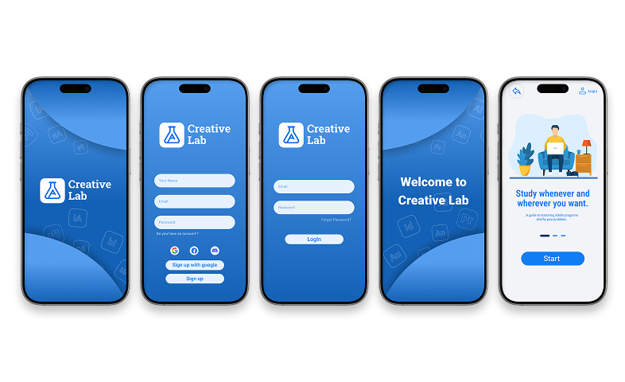
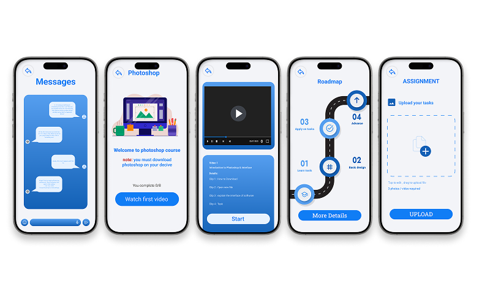
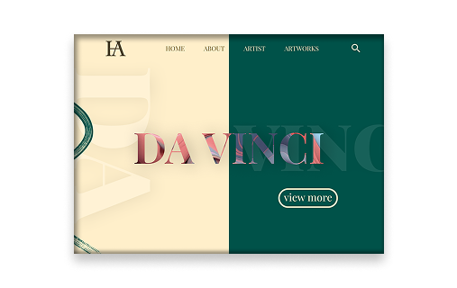
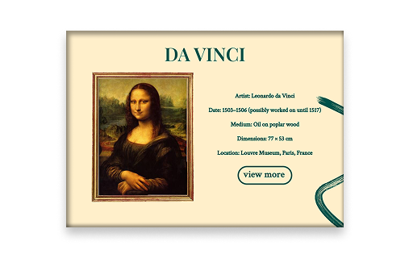
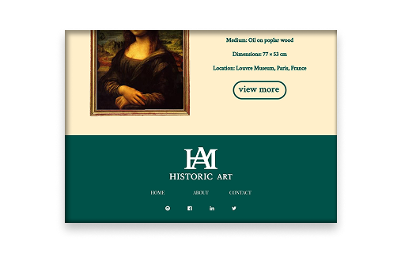

"Designing intuitive, user-centered digital products and interactive web experiences. Here is how I transform complex user problems into seamless, wireframed, and visually stunning interfaces."

Creative Lab is a sophisticated application that helps users master Adobe software. The focus is on creating elegant, responsive, and highly accurate interfaces, with an emphasis on ease of use. Discover my strategic approach, from designing user journeys to delivering stunning visual designs.


Historic Art is a premium, editorial web experience designed for art museums and cultural institutions. The layout focuses on bold editorial typography, immersive storytelling, and a deep monochromatic color palette that honors historical masterpieces


